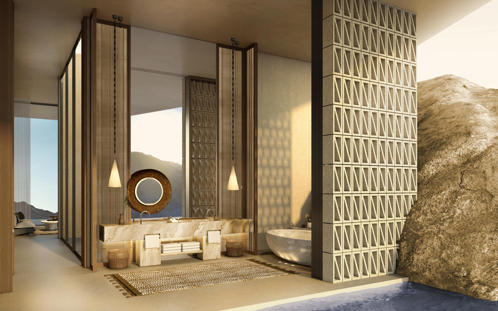
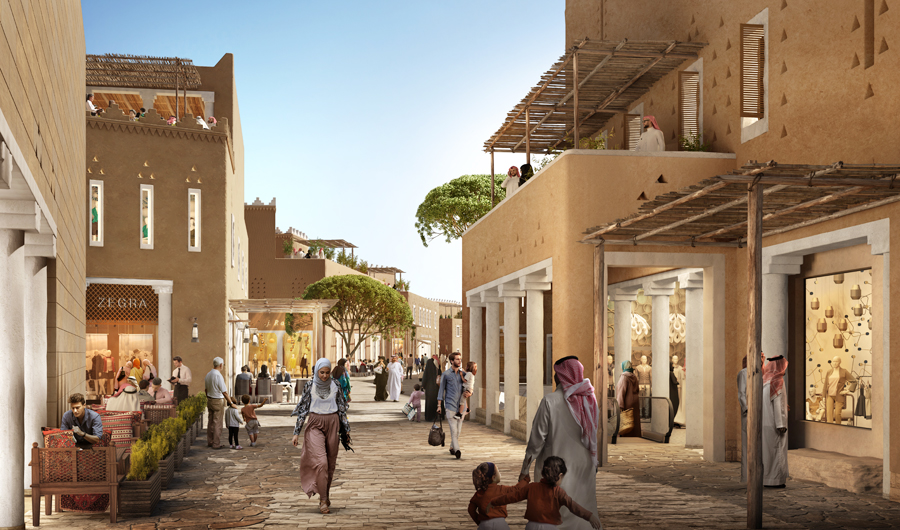
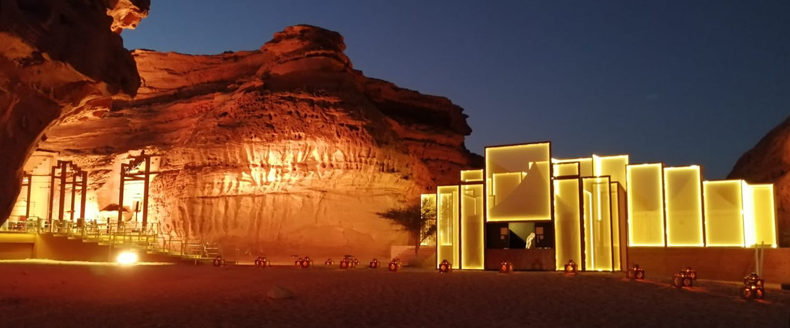
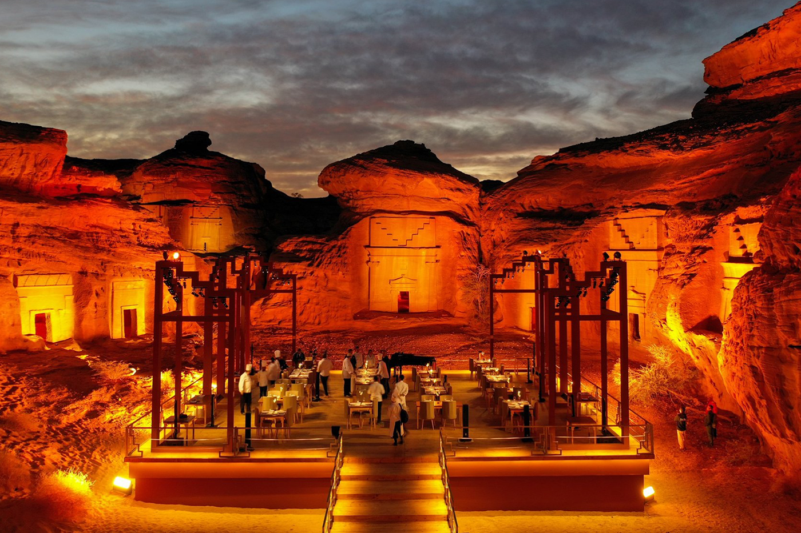

Built on the Red Sea in northwest Saudi Arabia, NEOM is a living laboratory – a place
where entrepreneurship and innovation will chart the course for this New Future.
It will be a destination; a home for people who dream big and want to be part of building a new model
for sustainable and prosperous living.
NEOM is not just a place - it’s a mindset. It’s being designed, constructed and independently
administered in a way that is free from outdated economic and environmental infrastructure that
constrains other countries across the world.
The NEOM project aims to achieve exceptional livability, thriving businesses and reinventing
conservation, in line with Saudi Vision 2030.
"THERE IS A FUTURE,
IT'S CALLED THE LINE"
WHAT IS THE LINE?
THE LINE is a never-before-seen approach to urbanization – a 170km-long linear urban development of
multiple, hyper-connected communities, with walkable neighborhoods integrated with public parks and
the natural landscape. It is a model of urban design and livability in harmony with nature for the
21st century and beyond.
THE LINE will reshape the traditional concept of urban life, enabling NEOM to become an economic
engine for the Kingdom of Saudi Arabia, the region, and the world.
THE LINE will create 380,000 new jobs, spur economic diversification and contribute SAR 180bn to
domestic GDP by 2030.
Powered by 100% renewable energy, the principles of environmental responsibility will be enshrined in
business regulations to promote sustainable and regenerative development practices.
All essential daily needs will be within a five-minute walk.
Communities will be built around people, not cars, easily accessible and designed for convenience and
walkability, creating vistas of beauty and tranquility.
THE LINE is supported by a physical and digital infrastructure layer seamlessly integrated beneath the
surface and containing essential utilities and transportation services.
The infrastructure spine will include ultra-high-speed mass transit access to the communities along
THE LINE.
Communities will live in harmony with nature, where open space, parks, gardens, the natural
environment and sustainable food production are mixed seamlessly.
All businesses and communities on THE LINE are hyper-connected through a digital framework
incorporating Artificial Intelligence and robotics that continuously learn and grow – over 90% of the
data in NEOM will be analyzed to provide a predictive system with ever-improving services to residents
and businesses.
The communities will be self-sufficient and reflect the personality of their residents, the region and
the industries within them.
THE LINE
“I present to you THE LINE, a city of a million residents with a length of 170 km that preserves 95%
of nature within NEOM, with zero cars, zero streets and zero carbon emissions.”
NEOM will reimagine the way we approach urban development, overcoming challenges of modern
cities and prioritizing people.
Replacing cars and streets with walkable distances for a healthy lifestyle.
The longest journey will never be more than 20 minutes.
Making everyday life seamless through invisible AI-enabled infrastructure that continuously
learns and predicts ways to make life easier for residents and businesses.
Protecting stunning landscapes and integrating nature into the heart of communities for
unmatched lifestyle and well-being,FOR MORE INFO
click Here
RED SEA PROJECT
The project sits over 28,000 km2 of pristine lands and waters and includes a vast
archipelago of more than 90 islands and will set new standards in regenerative tourism and sustainable
development, creating unique travel experiences and unforgettable memories. With sustainability at its
core, supporting infrastructure emphasizes renewable energy and water conservation and re-use.
The destination also features mountain canyons, dormant volcanoes, and ancient culture and heritage
sites. The Red Sea Project will include hotels, residential properties, leisure facilities and
entertainment ventures.
The Red Sea Project showcases Saudi Arabia’s rich potential to the world and is unlocking new economic,
cultural and social opportunities..
THE RED SEA PROGECT GLOBALLY ACCESSIBLE
With its own dedicated airport under development, the Red Sea Project will be easily accessible to
visitors from around the world. At the crossroads of Europe, Asia and Africa, 250 million people will
be within three hours flying time. With an average summer temperature of 32 degrees and 360 days of
sunshine, the Red Sea Project will be a truly year-round destination.
Pristine natural environments
Our aim is to set new standards in regenerative tourism, sustainable development, respecting the
natural world, creating opportunities for the local communities and protecting and enhancing the
destination for the future.

UNIQUE RESORT EXPERIENCE
The resort will feature state-of-the-art facilities, including a world-class spa and fitness center,
remote destination dining areas as well as a feature lagoon oasis. Guests will be able to hike, use
dune buggies, and star gaze as part of the site-wide activities program.
The project also aims to maintain the ancient history of the site by hiring members of the local
community to act as stewards of the land and provide educational tours for visitors about the local
history of the area, FOR MORE INFO
click Here
QIDDIYA
In line with Vision 2030’s efforts to enhance Saudi Arabia’s entertainment, culture,
and tourism offerings, Qiddiya’s portfolio is based on five thematic cornerstones: Parks & Attractions,
Sports & Wellness, Motion & Mobility, Arts & Culture and Nature & Environment.
The master plan is carefully crafted to respect and enhance the site’s natural landscape and is based on
the following key development nodes: Resort Core, Qiddiya Village, Motion Zone, Eco Zone and Golf
Community.
As a core tenet of Vision 2030, Qiddiya has a dual economic and social purpose: to contribute to the
advancement of Saudi Arabia’s economic diversification whilst opening the Kingdom to the world.
Qiddiya
The capital of Entertainment, Sports, and the Arts
Qiddiya will be a disruptive destination recognized on the world stage as the home of the most
innovative and immersive experiences. Our wide range of offerings will be based on five cornerstones:
Sports & Wellness; Nature & Environment; Parks & Attractions; Motion & Mobility; and Arts & Culture,
making Qiddiya the capital of Entertainment, Sports and the Arts, not just in the Kingdom of Saudi
Arabia, but of the world.
Family-friendly theme parks, sports arenas suitable for international competitions, academies for
sports and the arts, concert and entertainment venues, racetracks for motorsport enthusiasts as well
as outdoor and adventure activities alongside nature and environment experiences are just some of the
fun attractions being developed. Qiddiya will also include a variety of real estate options and
community services.
In short, Qiddiya will be a place that enables the youth of Saudi Arabia to fulfill their ambitions.
It will be a place where they enjoy, appreciate, aspire, advance and nurture their potential; a place
that unlocks opportunities and new professional pathways to help build a more prosperous and
progressive society.
Opportunities to grow alongside a youthful society
Qiddiya Investment Company (QIC), a closed, joint-stock company was incorporated on May 10, 2018.
Presently, the Public Investment Fund (PIF) of Saudi Arabia is the 100% shareholder of the company.
Our corporate structure includes the Qiddiya Development Company LLC (established), Qiddiya Operating
Company LLC and the Qiddiya Foundation.
Qiddiya offers numerous opportunities for all investors, contractors, suppliers, strategic capital and
infrastructure partners as well as healthcare providers.
Our objective, in line with Vision 2030, is to ensure that Saudi Arabia is listed amongst the world's
top tourist destinations and we are proud of the local, regional and international media attention our
project continues to attract.
Drawn from its rich Saudi heritage, Qiddiya forges a new future for Riyadh
Located on the doorstep of Riyadh, the story of Qiddiya goes back centuries.
Long ago, the village of Qiddiya lay along one of the trade and pilgrimage routes that intersected the
Arabian Peninsula.
Qiddiya’s modern era began on April 25, 2016, when the Saudi government announced Vision 2030, a
blueprint for long-term prosperity.
As part of Vision 2030, His Royal Highness Mohammed bin Salman, Crown Prince, Deputy Prime Minister
and Chairman of the Council of Economic and Development Affairs and of the Qiddiya Board of Directors,
announced the Qiddiya project on April 7, 2017.
Qiddiya will support several goals of Vision 2030 which include driving economic diversification, job
creation, fostering a start-up culture, driving youth and female empowerment and doubling household
spending on domestic leisure and entertainment,FOR MORE INFO click Here
ROSHN
Chaired by His Royal Highness Prince Mohammad bin Salman bin Abdulaziz Al-Saud, Crown
Prince, Deputy Prime Minister and Chairman of Council of Economic Development Affairs, ROSHN aims to
increase the rate of homeownership to 70% within the next 10 years.
As part of Vision 2030, ROSHN will improve residents’ quality of life, provide jobs and create
opportunities nationwide.

Why Are ROSHN Communities Unique?
Our communities herald a new era of community living, through the development of beautifully designed
homes, complemented by mosques, retail and F&B outlets, parks, schools and leisure and entertainment
facilities, to promote better living for a better life.
Located just 20 minutes northwest of Riyadh’s city center, Diriyah will be
transformed into one of the world’s foremost lifestyle destinations for culture and heritage,
hospitality, retail, and education, and will become one of the world’s great gathering places.
At the heart of the development is the At-Turaif UNESCO World Heritage Site, an iconic mud-brick city,
and the home of the First House of the Al Saud family and capital of the First Saudi State, preserved
and restored for future generations.
Combining traditional Najdi architectural typology and new urbanism, Diriyah will be a place that
connects emotionally with visitors and residents, promotes, and celebrates the destination’s rich
heritage and reveals the origins of modern Saudi Arabia and the spiritual values in which it is rooted.
Under the mandate of Diriyah Gate Development Authority, the project contributes to Vision 2030, by its
target of 27 million local and international visitors by 2030. This supports the national tourism
strategy which aims to host 100 million worldwide tourists in the Kingdom by 2030.
YOUR LOCAL BUSINESSES
This is where you can support some of your favourite local businesses in Diriyah, or submit suggestions
for some we’ve not yet covered. You can find the full list of businesses here.
This is where you can support some of your favourite local businesses in Diriyah, or submit suggestions
for some we’ve not yet covered. You can find the full list of businesses here.
We’re always looking for exceptional hospitality talents who can become Host Ambassadors, welcoming
international tourists and sharing with them the treasures of Diriyah. With the help of our workshops
and specialized programs, we’ll make sure that volunteers develop their skills further so they can be
the perfect hosts for our community,FOR MORE INFO click Here
AMAALA
Owned by the Public Investment Fund and a key contributor to Vision 2030, AMAALA will
establish new standards in luxury and wellness. Set in the Prince Mohammad bin Salman Natural Reserve
across three unique communities,
AMAALA builds on Vision 2030 and is designed to harness and showcase the Kingdom’s greatest strengths.
AMAALA is helping to create a more sustainable economy through the development of new tourism, wellness
and cultural experiences for Saudi citizens and visitors from around the world.
The 4,155 km2 year-round destination will offer 3,000 hotel rooms across some 25 hotels, as well as
private residential villas, apartments and estate homes, alongside high-end retail establishments, fine
dining, and wellness and recreational facilities.
AMAALA will be a unique luxury resort destination. The values, the experiences, and the opportunity for
self-discovery that will be offered, differentiates AMAALA from every other destination on the planet
Inspired by Saudi Arabia's Vision 2030, AMAALA will elevate the kingdom’s hospitality sector and pioneer
the way luxury will be experienced in years to com, FOR MORE INFO click Here
ALULA
The region encompasses more than 200,000 years of unexplored human history including
the Nabataean city of Hegra, Saudi Arabia’s first UNESCO World Heritage Site; the ancient North Arabian
Dadanite and Lihyanite Kingdoms, whose scripts contributed to the evolution of the Arabic language; and
AlUla Old Town, a stopping point for pilgrims from 1100CE.
The Royal Commission for AlUla’s long-term plan is shaped by a sustainable, sensitive and responsible
approach to urban, economic, and heritage development, preserving the area’s remarkable natural and
historic character whilst opening AlUla as a special location to live, work and visit.
The plan involves a broad range of initiatives across archaeology, tourism, culture, and education and
the arts and reflecting Vision 2030’s goals in economic diversification, local community empowerment and
heritage preservation.

AlUla, The World's Masterpiece, is one of the oldest cities in the Arabian Peninsula and home to Hegra,
a
UNESCO World Heritage site.
A land rich in historical, geological and geographical significance, this ancient city, once at the
crossroads of The Silk Road and The Incense Route, has only recently been re-discovered by the world
Are you intrigued by the ancient? Excited by the shiny and new? Do you long for the thrill of adventure,
the silence of the land, or stimulation of the mind and body? AlUla invites you to find yourself and
indulge your passions. The upcoming months are jam-packed with experiences that feed all the senses.
Come
and find the YOU in AlUla and enjoy an unmissable choice of music, art, heritage, adventure, culture and
food.

A DESERT OASIS BECKONS NATURAL WONDERS
AlUla is such a noteworthy destination because of its layer upon layer of human history and a wealth of
natural wonders waiting to be explored. Few locations can boast such a rich combination of heritage,
culture and natural beauty.
There’s also a sense of openness, vastness and quiet that invites visitors to wander in AlUla’s living
museum. From mazes of dramatic rock formations to rolling, sand-swept dunes to a valley cloaked in palm
and citrus groves to millennia-old clues in basalt lava flows, be sure to leave plenty of time in your
AlUla itinerary to commune with its expansive natural offerings,FOR MORE INFO VISITclick Here
RIYADH ART
The region encompasses more than 200,000 years of unexplored human history including
the Nabataean city of Hegra, Saudi Arabia’s first UNESCO World Heritage Site; the ancient North Arabian
Dadanite and Lihyanite Kingdoms, whose scripts contributed to the evolution of the Arabic language; and
AlUla Old Town, a stopping point for pilgrims from 1100CE.
The Royal Commission for AlUla’s long-term plan is shaped by a sustainable, sensitive and responsible
approach to urban, economic, and heritage development, preserving the area’s remarkable natural and
historic character whilst opening AlUla as a special location to live, work and visit.
The plan involves a broad range of initiatives across archaeology, tourism, culture, and education and
the arts and reflecting Vision 2030’s goals in economic diversification, local community empowerment and
heritage preservation.
EXPLORE RIYADH
Riyadh is home to some of Saudi Arabia’s most extraordinary sites of natural and historical beauty. The
city’s beguiling history and landmarks make for a must-visit destination for any cultural enthusiast, with
the added benefit of numerous art galleries and historical centers to explore. In 2020 Riyadh was selected
by UNESCO as the cultural capital of the Arab world.
ntegral to Vision 2030, Riyadh Art is one of the largest public art programs being undertaken in the world
today. It is one of the four grand projects conceived by the Royal Commission for Riyadh City to transform
the capital into a vibrant, cosmopolitan city.
Comprising more than 1,000 original public art installations across the city created by local and
international artists, and supported by two major annual festivals, Riyadh Art will enrich lives through
creative joyful experiences.
FOR MORE INFO click Here
SAUDI GENOME PROGRAM
The Saudi Genome Program (SGP) will create a database to document the first genetic
map of the Saudi society, develop personalized medicine practice, reduce the cost of healthcare, and
improve quality of life.
The program supports healthcare provision through better diagnosis, therapy, and prevention. Major
outcomes will include the implementation of premarital and newborn screening, cancer screening and
targeted therapy, and better management of other multifactorial genetic diseases such as diabetes and
loss of vision/hearing.
The Saudi Genome program
is a pioneering national transformation initiative of Saudi Vision 2030. The
program objectives are to reduce the incidence of genetic diseases in the kingdom, establish a genetic
database, and document the first Saudi genetic map by sequencing the genome of Saudi population.
Consequently, the program will establish the foundation for personalized medicine and genomic sciences in
the Kingdom of Saudi Arabia. This is the largest genetic based disease discovery effort in the Middle East
and it will enable the Kingdom to have affirm its global lead in the field of genetic research for
diseases and personalized medicine.
The program’s deliverables will have direct positive impact on the Saudi public health, as genetic
information about the Saudi population can be employed in detecting, diagnosing, and preventing various
genetic diseases. Further, this will lead to improving treatment options and facilitate use of
preventative measures via early detection of chronic diseases, such as colon and breast cancer, cardiac
diseases, and neurological diseases. Personalized medicine in Saudi Arabia will achieve an accurate and
more compressive approach to its practice. This contributes to realizing the Saudi Vision 2030 in terms of
localizing and developing technology in sectors with large domestic spending.
The program also played a prominent role in the field of infectious diseases by studying and identifying
the genetic factors that cause the variation in symptoms of the emerging coronavirus (Covid-19) among
Saudis.
The role of KACST
in the Saudi Genome Program
KACST is developing an integrated interactive information ecosystem that contributes to limit the genetic
diseases in the Saudi population. The program has collaborated with various entities including the
Ministry of Health, King Faisal Specialist Hospital & Research Center in Riyadh and Jeddah, King Fahad
Specialist Hospital in Dammam, King Fahad Medical City, King Abdullah International Medical Research
Center at the National Guard Health Affairs, University of Hail, and Taibah University. The Saudi Genome
Program is one of KACST’s initiatives to transfer and localize health technologies.
FOR MORE INFO VISIT click Here


 AMAALA will be a unique luxury resort destination. The values, the experiences, and the opportunity for
self-discovery that will be offered, differentiates AMAALA from every other destination on the planet
Inspired by Saudi Arabia's Vision 2030, AMAALA will elevate the kingdom’s hospitality sector and pioneer
the way luxury will be experienced in years to com, FOR MORE INFO
AMAALA will be a unique luxury resort destination. The values, the experiences, and the opportunity for
self-discovery that will be offered, differentiates AMAALA from every other destination on the planet
Inspired by Saudi Arabia's Vision 2030, AMAALA will elevate the kingdom’s hospitality sector and pioneer
the way luxury will be experienced in years to com, FOR MORE INFO